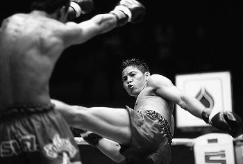

Пробиваем маваши гири чудан
Московская Городская Федерация Киокушинкай Каратэ-до была основана в 2003 году. С 2003 года Федерацию возглавлял Золотовский Андрей Александрович (в настоящее время президент Ассоциации Киокусинкай г. Москвы).
С 2007 года – Дедик Максим Викторович (в настоящее время преподаватель РГУФКСиТ по Киокусинкай).
В октябре 2008 года единогласным решением общего собрания тренеров МГФКК президентом Федерации был избран Башлыков Алексей Владимирович.
На сегодняшний день МГФКК объединяет 35 тренеров и более 1000 спортсменов, от мала до велика, являясь одной из ведущих столичных федераций. С 2006 года МГФКК является коллективным членом РСОО «Ассоциация Киокусинкай г. Москвы», что